Beginning Electronics Lessons
Every lab below builds a real circuit with parts from the course's $50 kit. Each one links to a chapter that teaches the theory first — start there if a lab's "Before You Start" table names a prerequisite you haven't read yet.
The colored dot beside each lab in the sidebar shows how finished it is: green means publish-ready, amber means teachable but incomplete, and grey means it's still a stub. See the lab evaluator's scoring bands for the full scale.
-

Match every part in your $50 kit to its name, symbol, and job.
-
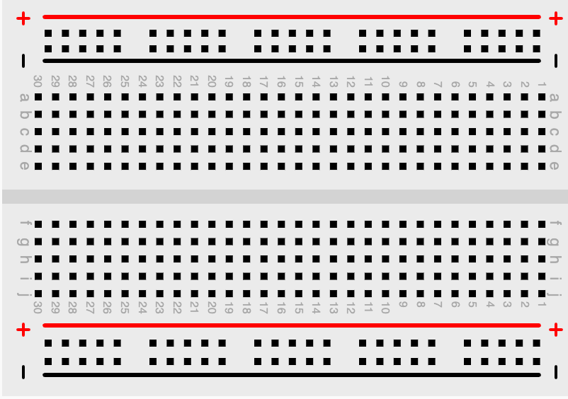
Learn how a breadboard's hidden rows and rails connect underneath the holes.
-
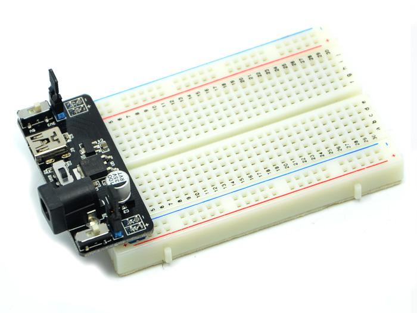
Compare ways to bring 5 volts safely to your breadboard's power rails.
-
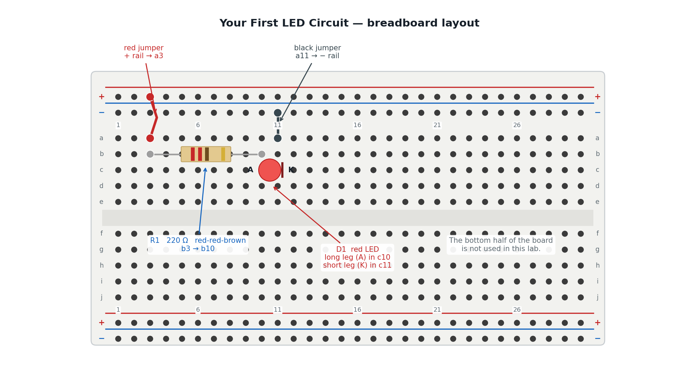
Light an LED on a breadboard with a current-limiting resistor, and learn to spot the four mistakes that keep an LED dark.
-
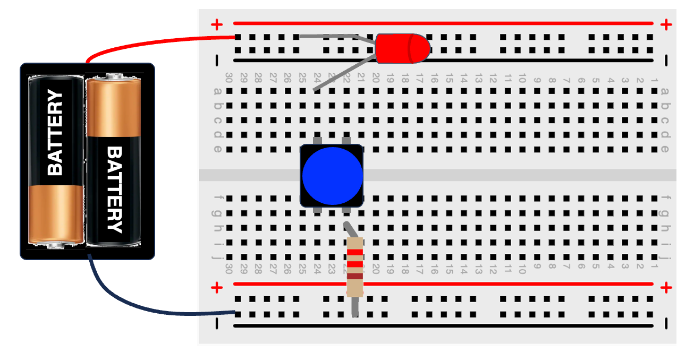
Add a push button in series with your LED so you decide when it lights.
-
Wire two buttons in series so pressing both — and only both — lights the LED.
-
Wire two buttons in parallel so pressing either one lights the LED.
-
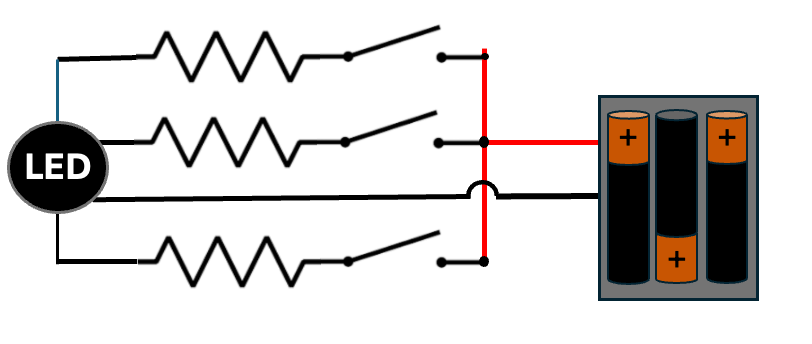
Wire a common-cathode RGB LED and mix red, green, and blue with three resistors.
-

Wire a classic NE555 astable circuit that blinks an LED on its own forever, and calculate exactly how fast it blinks.
-

Drive a piezo buzzer straight from a 555 timer, then swap in a trim pot to turn the pitch into a rising-and-falling siren.
-
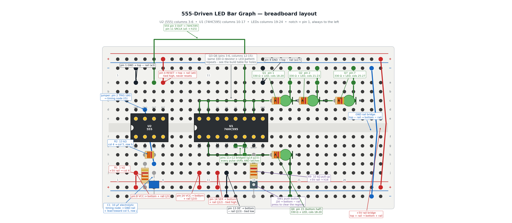
Wire a 555 clock into a 74HC595 shift register so eight LEDs fill up one at a time, then press a button to clear the bar and watch it fill again.
-
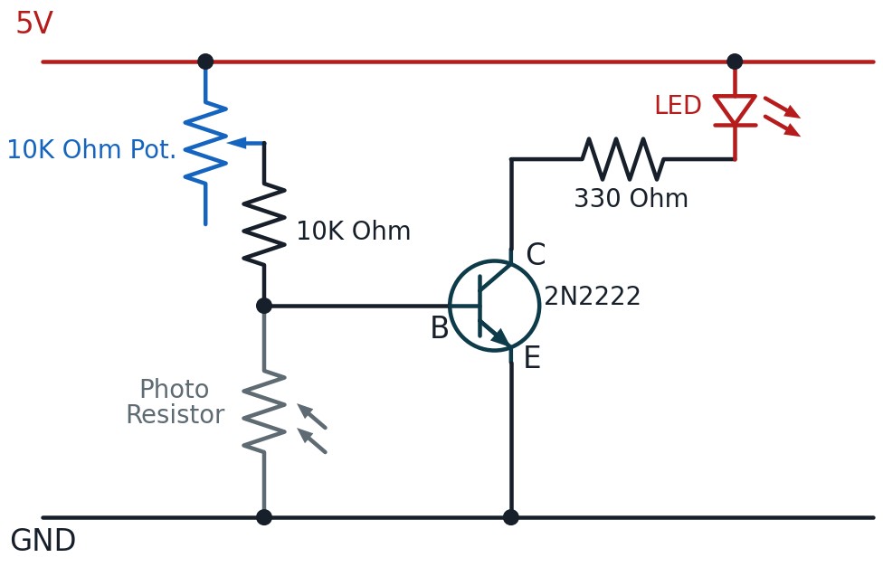
Build a light-sensing circuit that switches an LED on automatically when it gets dark.
-
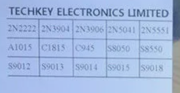
A reference tour of common transistor types and what their datasheets mean.
-
Comparing the BC547 vs. the 2N2222 Transistors
Compare two popular NPN transistors side by side.
-
Boolean Logic Gates From Transistors
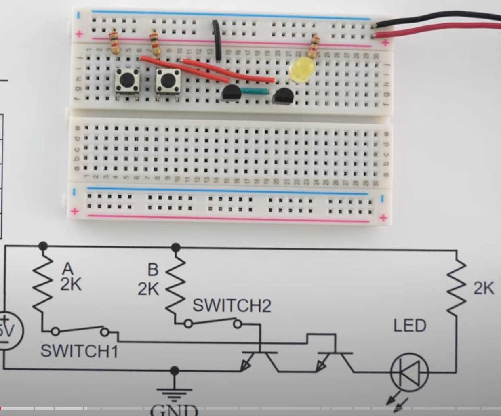
Build AND, OR, NAND, NOR, XOR, and XNOR gates from individual transistors.
-
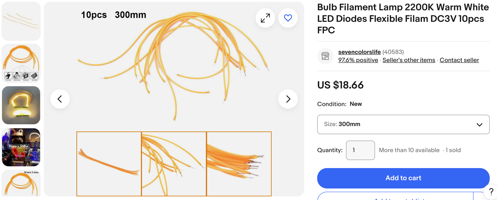
Drive a high-current LED strip safely using a transistor as a switch.
-
Driving a Motor and a Buzzer Safely

Build a button-controlled transistor motor driver protected by a flyback diode, then swap the motor for a buzzer.
-
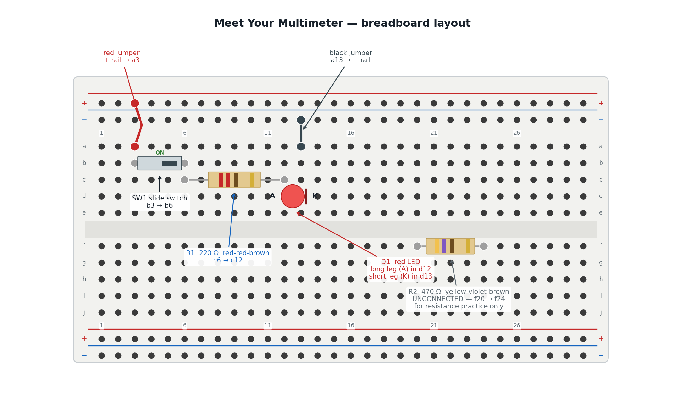
Put a multimeter on a circuit you already trust and turn four of this book's promises into numbers you measured yourself.
-

Measure a healthy circuit's baseline, then use half-split testing to find a hidden fault in three measurements or fewer.
-
An optional, beyond-the-kit guide to transferring a circuit from breadboard to solder.
-
Time a resistor-capacitor circuit's charge and discharge curve.